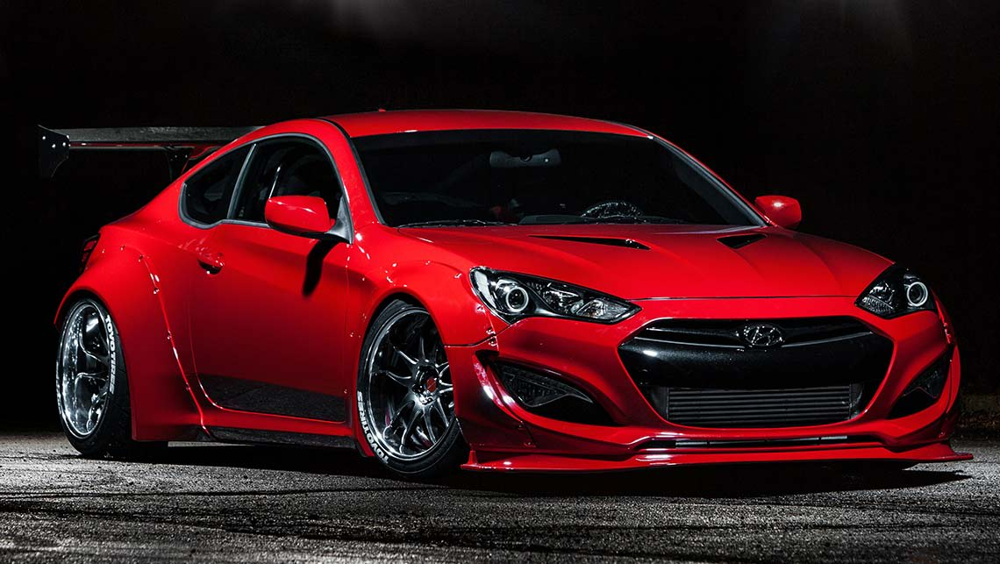
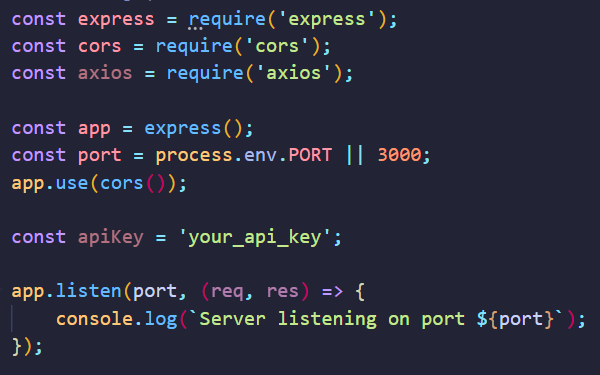
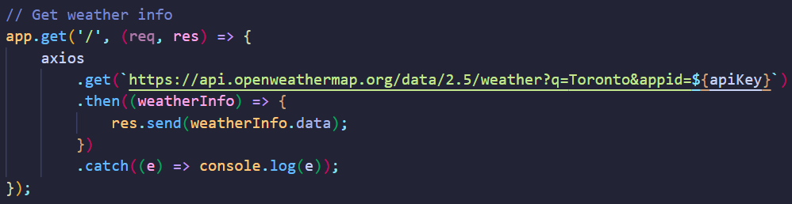

1st. Picking the right IDE for your project
There are many ways that developers will create, edit, and run their code. Generally, they use a program called an IDE (integrated development environment), which usually offers them plenty of benefits when coding such as third-party plugins, themes, code analysis, smart suggestions, automation tools and debugging. For creating web applications using HTML, CSS and JavaScript we would like to recommend you to use either Visual Studio Code or WebStorm for the greatest development experience.
2nd. Understanding the basics
Secondly, you should have a clear understanding of the basics of HTML and CSS. This means knowing how to use most HTML elements correctly and being able to apply various CSS styling to elements accordingly. We recommend before continuing with this tutorial to ensure that you are up-to-date with your HTML and CSS skills by checking out W3.Schools HTML basics and MDN Web Docs' CSS basics examples.
3rd. Choosing your Frontend CSS Framework
Next up, you must choose to configure and install your preferred frontend CSS framework. For this tutorial and our example, we will be using Bulma. Although we will go more in depth with our guide and examples, feel free to browse through their website and documentation.
4th. Learning and using your CSS Framework
It is quite simple to use a CSS framework. Lastly, simply apply an existing class to an HTML element, and it should apply the styling as expected. Below we will go over specific steps on how to create a good-looking website:
Typography
Alter text properties such as the size, weight, and others too! Take a look at how Bulma allows you
to customize these properties.
Examples:
is-italic
is-underlined
has-text-weight-semibold
has-text-weight-bold
is-size-5
is-size-4
Images
Images should be responsive so that your layout is not destroyed when the viewport's width changes.
Bulma shows you how to make your images responsive and how to style them too!
Example:
Using 'is-rounded'

Buttons
Buttons are at the core of any form and design. They are meant to be an element which can be noticed
and interactive on your page. Have an attractive button with a hover effect too! Check out how Bulma
allows users to do this on their docs.
Examples:
Now ... let's make our website functional!
1st. Choose your Backend Framework
There are many amazing resources and technologies out there to choose from. For the easiest and smoothest backend experience to connect with our frontend client developed in HTML, CSS and JavaScript, we will be using Node.js.
2nd. Choose your Server
One of the most popular REST API server packages to use along Node.js is Express.js. By choosing to use Express.js for our tutorial, we can ensure we have a trustworthy and reliable node package to implement.
3rd. Install Required Dependencies
Using node's package manager, npm, install each of the following
dependencies by
entering the following
command:
$ npm install axios cors express
4th. Create an index.js file
Next we will create our main JavaScript file which will contain the code
responsible for
configuring and running our server:

5th. Create a designated route
Following the previous step, we will create a designated route for the client to call our
API
server to retrieve information. Specifically for our tutorial, this API route will allow the
client
to call the server to get information on a particular city's weather. Check out the code
below:

6th. Calling an API
Afterwards, from our server we call the Weather server's API in order to
actually
retrieve real current data on the city's weather:

7th. Running your server
Lastly, run either of the following commands to start running your server!
$ npm run start
OR
$ node index.js
We hope you enjoyed our tutorial and had a smooth learning experience! :) Please check out our Demo page to see our code put to action.